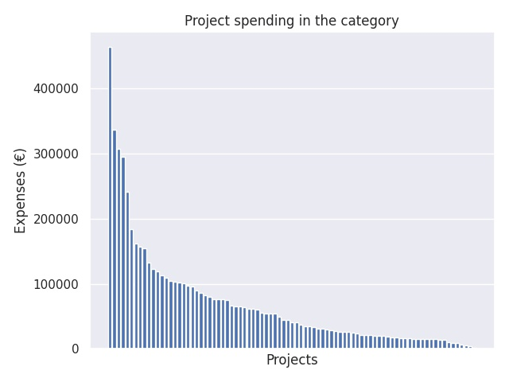

Varhaiskasvatuksen kehittäminen
Category summary
68.7K spent on average
464K highest spending

Reports in the category
Kouvolan kaupunki/ varhaiskasvatus
Project name: Kehittävä palaute varhaiskasvatuksessa
464K spent
Helsingin kaupunki
Project name: Oivalluksia varhaiskasvatukseen!
337K spent
Tampereen kaupunki, Varhaiskasvatus ja perusopetus
Project name: Varhaiskasvatuksen oppivat yhteisöt ja seutukunta
308K spent
Turun kaupunki
Project name: Pedagogiikan johtaminen varhaiskasvatuksessa
296K spent
Lahden kaupunki
Project name: Yhteishanke kunnallisten varhaiskasvatuspalveluiden seudulliseksi kehittämiseksi
242K spent
Kirkkonummen kunta
Project name: Diggaa mun digimatkaa - Digitaaliset portfoliot varhaiskasvatuksen pedagogisen toimintakulttuurin kehittämisessä
184K spent
Seinäjoen kaupunki, Varhaiskasvatus
Project name: Seinäjoen kaupungin varhaiskasvatuksen oppimisympäristöjen, TVT- ja liikuntakasvatuksen kehittäminen
162K spent
Kajaanin kaupunki/sivistystoimiala/varhaiskasvatus
Project name: VASU17 Osaksi arkea- Kajaanin malli
157K spent
Oulun kaupunki
Project name: Uudistuva varhaiskasvatus Oulussa
155K spent
Helsingfors stad, Utbildningsverket
Project name: Känn teknologin! IKT som stöd för lärande och delaktighet i daghemmen
133K spent
Imatran kaupunki
Project name: Kohti uutta johtajuutta
123K spent
Siuntion kunta / Sjundeå kommun
Project name: VAIKUTTAVAN VARHAISKASVATUKSEN ASKELMERKIT -VARHAISKASVATUKSEN PEDAGOGISEN TOIMINTAKULTTUURIN KEHITTÄMINEN OPPIVAKSI JA OSALLISTAVAKSI YHTEISÖKSI LÄNSI-UUDENMAAN KUNNISSA 2016-2017
119K spent
Rovaniemen kaupunki varhaiskasvatuspalvelut
Project name: Osallistavalla johtajuudella pedagogiseen toimintaympäristöön
113K spent
Malax Kommun
Project name: TILLSAMMANS - med småbarnspedagogiken i fokus
110K spent
Hämeenlinnan kaupunki
Project name: Uudet varhaiskasvatussuunnitelmat 2017 käyttöön Hattulassa, Hämeenlinnassa ja Janakkalassa
104K spent
Mäntyharjun kunta
Project name: PAOVA - Pedagogiikan, johtamisen, arvioinnin ja osallisuuden kehittämis- ja tutkimushanke varhaiskasvatuksessa
104K spent
Riihimäen kaupunki
Project name: KULTA TOIVO; Lasten kulttuuriset taustat toiminnan voimavarana varhaiskasvatuksessa.
102K spent
Vantaan kaupunki
Project name: Kohti uutta inklusiivista toimintakulttuuria
101K spent
Maija Rikberg Kotkan kaupunki
Project name: Vuorovaikutuksellisen pienryhmätoiminnan vahvistaminen
97K spent
Kontiolahden kunta
Project name: Joensuun seudun VASU2017-prosessi
95.5K spent
Kronoby kommun
Project name: Utvecklande av småbarnspedagogiken i Jakobstadsregionen
90.1K spent
Lappeenrannan kaupunki/varhaiskasvatus
Project name: Vasureivaus 2016-2017
85.6K spent
Rauman kaupunki
Project name: "Leikin voima" - Pedagogiikan ja johtamisen kehittämishanke Rauman varhaiskasvatuksessa
82.8K spent
Raision kaupunki
Project name: Varhaiskasvatuksen laadun kehittäminen Raisiossa - tavoitteista arjen tekoihin
79.7K spent
Vörå kommun
Project name: Utveckling av småbarnspedagogik
76.9K spent
Kemin kaupunki
Project name: Vasun toimeenpano ja arviointi
76.8K spent
Korsholms kommun
Project name: "Ti arbeit pedagogiskt ilag" - ett projekt för att skapa gemensamma dokumentationsmodeller och kvalitetskriterier för den småbarnspedagogiska verksamheten
76.4K spent
Jyväskylän kaupunki
Project name: PETU - Pedagogisella tuunaamisella osallisuuden ja oppimisen iloa
75.2K spent
Iisalmen kaupunki
Project name: Osaamisella osallistumiseen
66.8K spent
Luvian kunta
Project name: Lasten ja vanhempien osallisuuden vahvistaminen varhaiskasvastuksessa
64.8K spent
Porvoon kaupunki
Project name: Oppivan yhteisön avaimet - Nycklarna till den lärande organisationen
64.8K spent
Varkauden kaupunki / Varhaiskasvatus
Project name: KultaVasu - Varkauden kaupungin varhaiskasvatuksen pedagoginen kehittäminen kulttuurin ja taiteen keinoin
64K spent
Valkeakosken kaupunki/Valkeakoski-opisto
Project name: Yhdessä enemmän – seudullista varhaiskasvatuksen yhteistyötä, suunnittelussa ja arjen pedagogiikassa
61.8K spent
Tammelan kunta
Project name: Yhdessä OSALLISIKSI! Fokuksessa osallistavan toimintakulttuurin edistäminen paikallisessa varhaiskasvatussuunnitelmaprosessissa sekä pedagogian johtamisen tukeminen
61.4K spent
Kuopion kaupunki, Kasvun ja oppimisen palvelualue, Varhaiskasvatuspalvelut
Project name: "Lähdetään löytämään" -innostava arki varhaiskasvatuksessa
60.3K spent
Esbo stad
Project name: På väg mot en lärande gemenskap
55.4K spent
Kimitoöns kommun
Project name: Du med naturen (DuMeNa)
54.8K spent
Kaustisen kunta
Project name: Alueellisesti kehittyvä varhaiskasvatus
54.5K spent
Kokkolan kaupunki
Project name: Varhaiskasvatus yhteinen asiamme
54.2K spent
Haapaveden kaupunki, opetustoimi
Project name: Varhaiskasvatus vauhtiin verkoston voimalla
49.7K spent
Laihian kunta
Project name: Oravametsän hedelmä, Kyrönmaan hedelmä
45.2K spent
Kankaanpään kaupunki
Project name: Pohjois-Satakunnan VASU 2017
44.2K spent
Vaasan kaupunki, varhaiskasvatuksen tulosalue
Project name: Varhaiskasvatuksen pedagogisen työn kehittäminen/ utvecklingsw av det pedagogiska arbetet inom småbarnspedagogiken
40.6K spent
Kempeleen kunta
Project name: Uudistuva varhaiskasvatus
40.4K spent
Liperin kunta
Project name: Toiminnallisen osallistumisen kehittäminen inklusiivisessa varhaiskasvatuksessa
37.6K spent
Suonenjoen kaupunki
Project name: Toimiva lapsi – toimiva arki
35.4K spent
Orimattilan kaupunki / varhaiskasvatus
Project name: Orimattilan varhaiskasvatuksen pedagoginen kehittäminen
34.3K spent
Limingan kunta
Project name: Uudistuva varhaiskasvatus Limingassa
33.3K spent
Haapajärven kaupunki
Project name: Kokeile, keksi, oivalla!
30.6K spent
Perhon kunta
Project name: Tietoa ja taitoa varhaiskasvatukseen
30.6K spent
Järvi-Pohjanmaan sivistyspalvelut
Project name: Kasvatukselliset kahvilat
29.4K spent
Ähtärin kaupunki
Project name: Varhaiskasvatuksen kehittäminen
28.9K spent
Laitilan kaupunki
Project name: Laitilan VARKE-hanke
27.4K spent
Nakkilan kunta
Project name: Nakkilan lasten kuperkeikka
26.7K spent
Laukaan kunta
Project name: MUUTOKSEN TUULISSA-toimintakulttuurin kehittäminen
26.7K spent
Parkanon kaupunki
Project name: Varhaiskasvatusta lapsen äänellä!
26.4K spent
Alavuden kaupunki
Project name: PALAPELI - parempaa laatua ja pedagogiikkaa lisäten
24.5K spent
Virtain kaupunki
Project name: Eväät hyvään elämään
24.4K spent
Pargas stad
Project name: Närmiljön som lärmiljö
21.1K spent
Ruokolahden kunta
Project name: Varhaiskasvatuksen kehittämishanke Parikkalassa, Rautjärvellä ja Ruokolahdella
21.1K spent
Raseborgs stad
Project name: Tillsammans med barnet!
20.7K spent
Savonlinnan kaupunki
Project name: Päiväkotien toimintakulttuurin kehittäminen, arviointi ja muuttaminen Savonlinna 2016-2017
20.4K spent
Kannuksen kaupunki
Project name: Mukana pienten askelissa
20K spent
Sotkamon kunta / Sivistyspalvelut /Varhaiskasvatus
Project name: Kohti erinomaista pedagogista johtajuutta
19.5K spent
Sodankylän kunta
Project name: Oppimisympäristöjen kehittäminen ja pedagogisen kahvilatoiminnan perustaminen varhaiskasvatuksessa
19.4K spent
Tyrnävä
Project name: Varhaiskasvatuksen pedagogiikan uudistaminen
18.1K spent
Taipalsaaren kunta
Project name: Länsi-Saimaan kuntien varhaiskasvatuksen pedagoginen kehittäminen
17.3K spent
Jokioisten kunta
Project name: Pedagogiikka vahvaksi -päivityshanke
16.7K spent
Mänttä-Vilppulan kaupunki
Project name: Yhdessä osallistuen
16.6K spent
Lumijoen kunta
Project name: Uudistuva varhaiskasvatus-täydennyskoulutus ja kehittämishanke
16.6K spent
Uuraisten kunta
Project name: Osallisuutta pienestä pitäen Uuraisten varhaiskasvatuksessa - "SALLI"-hanke
15.8K spent
Lapuan kaupunki
Project name: Pedagogiikan yhteisöllinen kehittäminen
15.1K spent
Ulvilan kaupunki
Project name: Pedagogisen johtajuuden ja tiimityön kautta kohti vahvaa arjen pedagogiikkaa
15K spent
Nurmeksen kaupunki
Project name: Yhdessä eheään varhaiskasvatukseen
15K spent
Kurikan kaupunki/varhaiskasvatus
Project name: VAPEKO -varhaiskasvatuksen pedagogiikkaa kolmella tasolla
14.8K spent
Muhoksen kunta
Project name: Uudistuva varhaiskasvatus
14.8K spent
Kangasniemen kunta/Varhaiskasvatuspalvelut
Project name: Kangasniemen varhaiskasvatuksen palveluverkon uudistaminen ja pedagogiikan kehittäminen
14.5K spent
Kauniaisten kaupunki
Project name: Kauniaisten varhaiskasvatuksen kehittäminen
13.5K spent
Huittisten kaupunki
Project name: Varhaiskasvatuksen uusi toimintakultuuri - Ilo & Onni
9.75K spent
Ristijärven kunta
Project name: Pedagogiikkaa pitäjän pirpanoille ja pirpanoiden paijaajille
9.11K spent
Utajärven kunta
Project name: Varhaiskasvatuksen kehittäminen
8.68K spent
Toholammin kunta
Project name: Digiloikka Lampinraitilla
6.73K spent
Taivalkosken kunta
Project name: Uudistuva varhaiskasvatus -täydennyskoulutus-ja kehittämishanke
5.81K spent
Oripään kunta/Varhaiskasvatus
Project name: Minä oripääläinen
3.71K spent
Lappträsk kommun
Project name: Hela Byns inlärningspark
2.3K spent